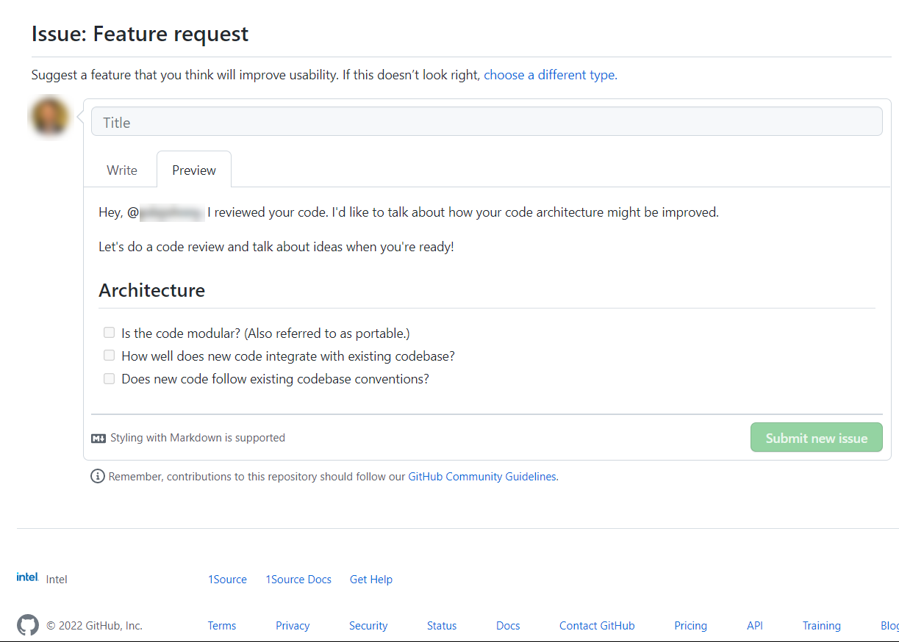
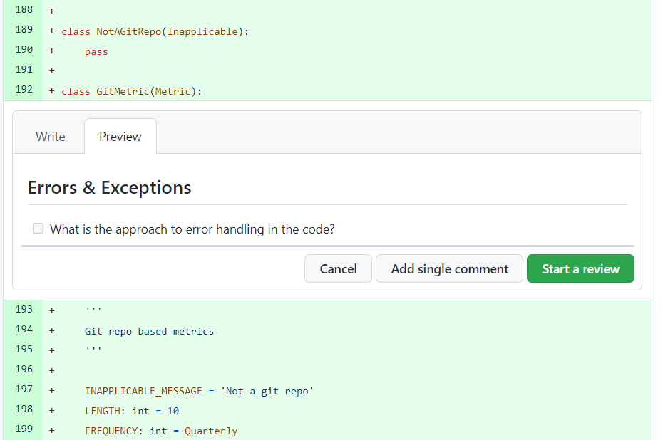

Code Reviews
Contents
Code Reviews#
Code reviews are an integral part of software development. This document provides guidance and templates for new or junior-level developers. Try our Instructions below as a starting point.
Checklists#
Code review checklists are included for those who wish to organize code reviews or 1:1 sessions. It's expected that you may modify templates or focus only sections relevant to a specific software solution.
Downloads#
Tip
Right-click a file and open it as a new tab to view as Markdown.
Instructions#
Click on a template above to download a template.
Copy and paste a single checkbox or a section of checkboxes.
As a Comment in a Pull request GitHub repo.
 Paste code-review checkbox in PR#
As an Issue in a GitHub repo.
 Paste code-review checkbox in Issue#
Note
In GitHub, select the Write tab to comment. Select the Preview tab to view Markdown.
Methods#
Here are a few methods for doing a code review.
A Linear Flow asks you to follow a linear sequence of steps
An Atomic Flow asks you to follow one specific event in the code and understand its impact.
Linear Flow#
Consider starting with a prompt like:
Where does the code start? (e.g., main function, object instantiation, etc.)
Is the execution path for the code clear?
How are parameters passed and handled?
Can you easily follow the specific order in which parameters/values are passed from one function to another?
Are failure scenarios handled gracefully in the code?
Atomic Flow#
Consider starting with a prompt like:
How do Classes instantiate objects that are needed to process data? Are class attributes properly introspected?
Which Class instantiation dependencies exist (outside scope of code)?
How is data processed via system calls, file-handling, or requests (e.g., GET, POST)? Are calls or requests efficient?
Which other groups (e.g., inside Intel) are involved in contributing to the codebase?
What is the scope of the other group’s responsibility in the codebase? (e.g., interoperability, drivers, UI/UX, etc.)